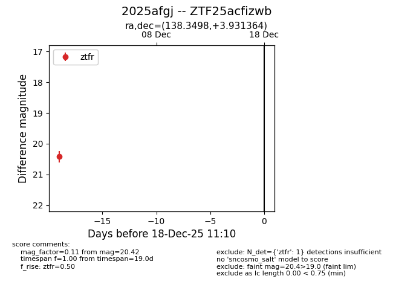
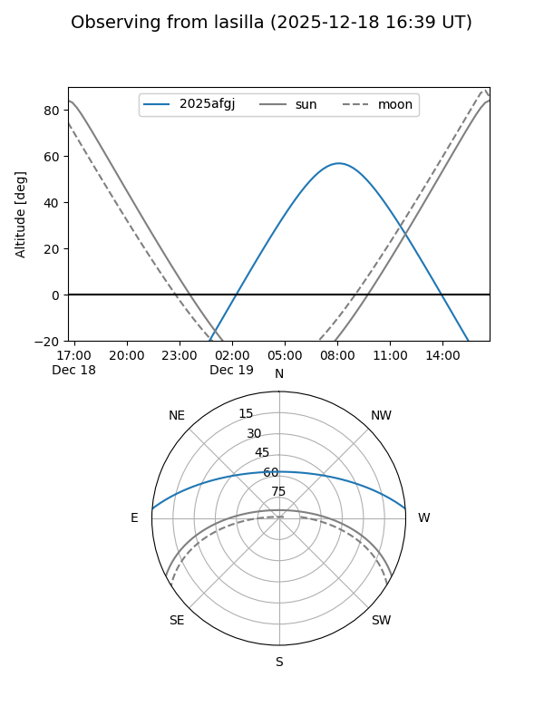
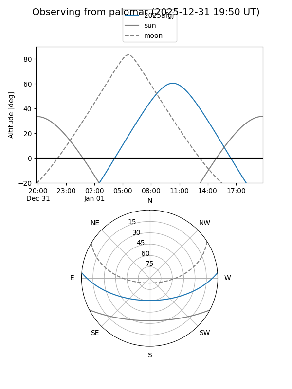

2025afgj
Target 2025afgj at 2025-12-31 16:59
Aliases and brokers:
FINK:
Lasair:
ALeRCE:
TNS:
YSE:
alt names
ZTF25acfizwb (ztf,fink_ztf)
2025afgj (tns,yse)
Coordinates:
equatorial (ra, dec) = 138.3498,+3.93136
equatorial (HMS+DMS) = 09:13:23.94,+03:55:52.91
galactic (l, b) = (226.9690,+33.14385)
Flags:
Photometry:
last ztfr=20.42
1 ztfr detections
Lightcurve

Visibility


Additional plots